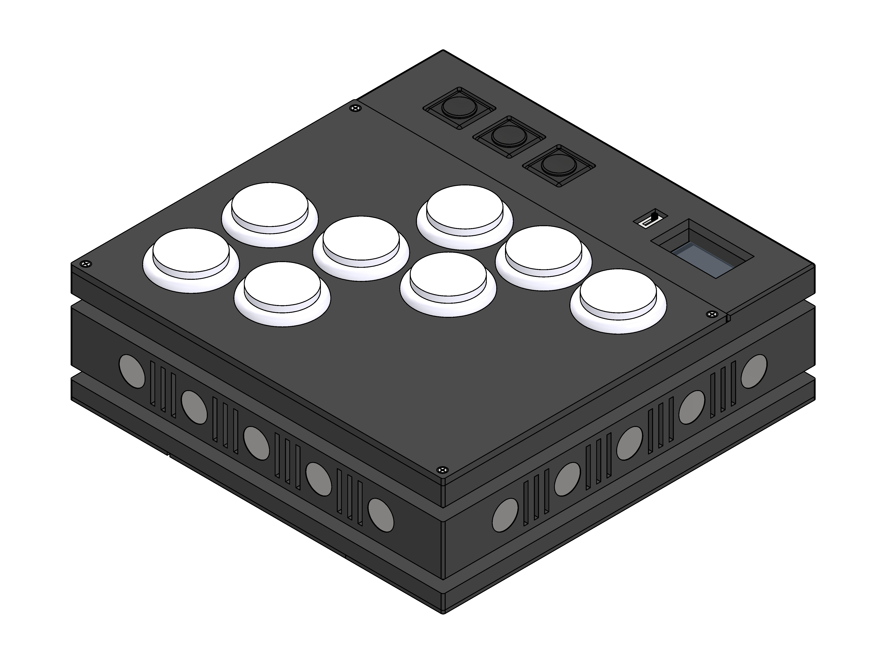
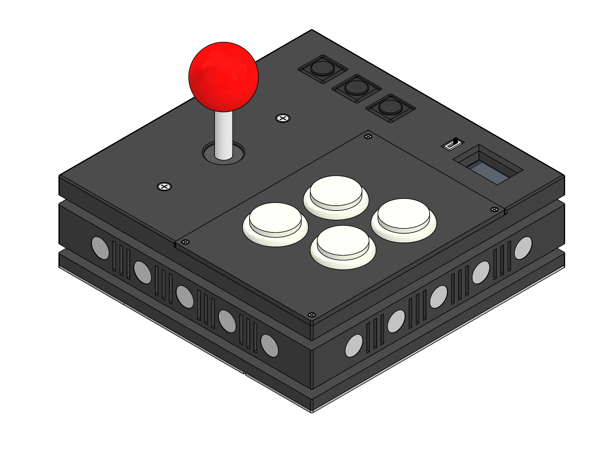
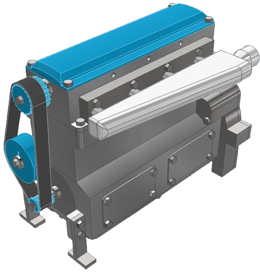
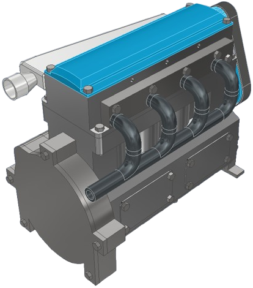
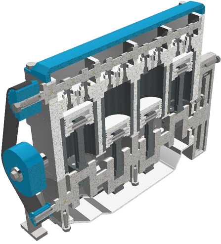
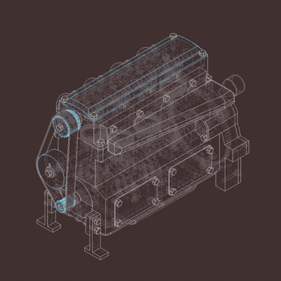
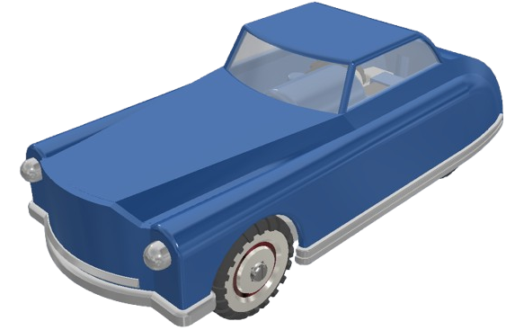
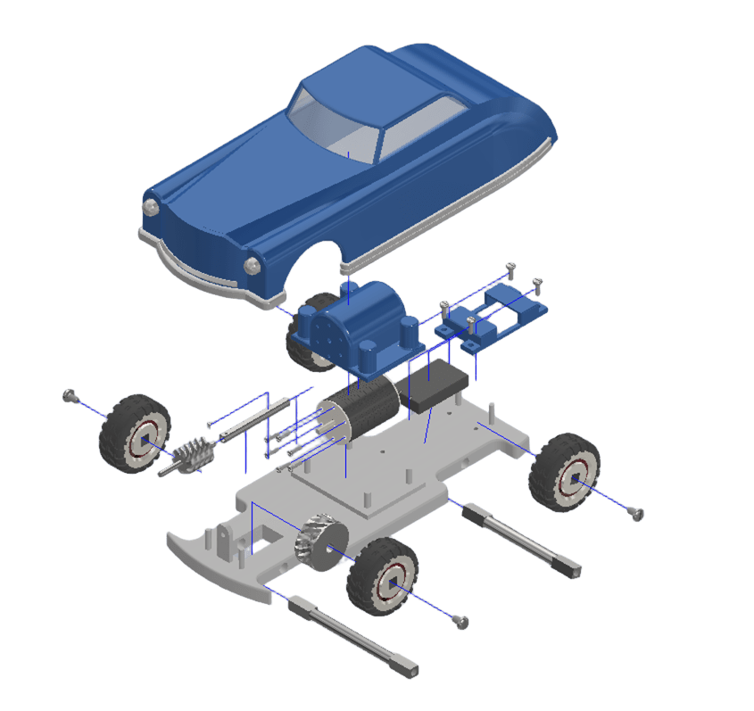
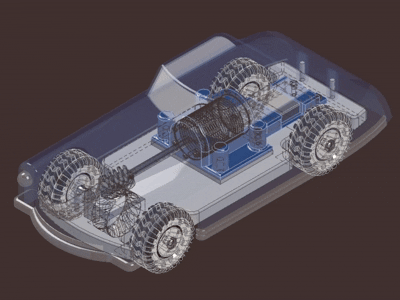

Projects
Below are several of the projects that I have worked on over the years, including projects that demonstrate my understanding in the electrical, mechanical, and software disciplines that make up the mechatronics program. Scrolling to the bottom will showcase several art works I have worked on. Enjoy! n.n
Contact me: (289)-404-9194 / paramanish11@gmail.com
Project: OPENARCADE


Timeline: Sept 2025 - Apr 2026
Current modern gaming controllers assume one-size-fits-all. The buttons are small and force the user to hold the controller in specific orientations creating intense strain on their joints. The fixed design of modern controllers prevents the user from being able to pick and choose what is best for them to improve their experience. The OPENARCADE addresses this. OPENARCADE is a modular, arcade fight box style controller aimed to provide accessibility in gaming while also promoting user customization.
- Swappable button plates and joystick toppers to ensure that the users hand preferences are met. Its as simple as unscrewing the top button plate, unplugging them and placing them into a new button plate. Joystick toppers require the user to just unscrew the topper and replace it with a new one.
- Modules can be connected to each other to form the controller that the user likes by using the magnetic mechanical connector piece that can be slotted on all 4 sides of the controller.
- Use of additive manufacturing approach (3D printing) with consideration of weight, material usage and air circulation to keep electronics cool and usable for several hours. DFMA principles applied to ensure that a simple standardized and repeatable design was developed.
Project: 4-Cylinder Toy Engine Design




Timeline: Jun 2025-Jul 2025
The goal of this project was to research the underlying mechanisms of the 4-stroke and 4-cylinder internal combustion engine and form a near-manufacturable model that can showcase the process.
A set of engineering drawings were designed to showcase all parts and exploded assembly view for accurate design and manufacturing.
After completing the engine, a set of studies were completed
- Motion study showcasing the starter motor gear and flywheel moving the camshaft, which would be connected to the camshaft (single overhead camshaft (SOHC) design) via synchronous belt drive.
- Additive manufacturing simulation in Autodesk Fusion 360, utilizing a metal powder bed fusion (MPBF) 3D printer to make an accurate simulation.
Project: Remote Controlled Vehicle Design



Timeline: Jan 2025-Apr 2025
The goal of the project was to design a working CAD model of a toy RC car that would be realistic in size and documented in the form of a report and through accurate and highly detailed engineering drawings.
After the car model was drafted, a set of studies were completed:
- Motion study, which was completed through a realistic analysis of the motion of components of the vehicle, taking the rotational motion of the motor and converting it to the axis of the axles connecting the wheels.
- Finite element analysis of the axles of the vehicle completed to asses critical points and where potential failure could occur.
- Additive manufacturing simulation using CAM software in Fusion 360, which was completed on the base of the vehicle to note the feasbility of the design, if it was to be 3D printed. This analysis helped assess the location of the supports that would be needed to create a stable design during the printing process.
- Optimization study/simulation using the CAE software in Fusion 360, which was completed on the base as well, in order to assess which areas of the base could be optimized to reduce material usage during the fabrication process.
Project: SDRAM Controller Interface on FPGA
Timeline: March 2025
A smaller project on the DE1-SoC which allowed me to understand and learn how to develop hardware/software codesign through the FPGA. The goal of this prject was to connect the SDRAM memory chip of the DE1-SoC to the Avalon interface also present on the board, which would allow for software implementation to be connected to the chip. The project required us to develop an SOPC (system on programmable chip), which would eventually allow C code to be transferrable to the FPGA.
Project: Digital Signal Processing on FPGA
Timeline: Feb 2025
A smaller project that utilized the DE1-SoC FPGA to develop a signal processor that could take in sound input and either replay it with an echo or with specific frequencies removed. The echo worked by taking the original sound and running it through a shift register, while adding that output to the original sound. We also developed a FIR filter to remove specific frequecies from the sound input.
This project was developed using hardware design completed in Verilog, with the mathematical component of the FIR filter completed in MATLAB.
Personal: Art